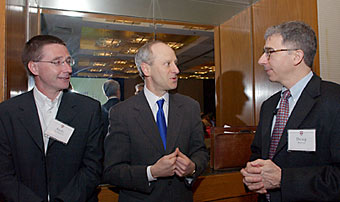

News Archives : 2004 : Stem Cell Institute Holds Inaugural Symposium
by Charlie Schmidt
May 3, 2004
The institute escalates Harvard's commitment to stem cell research, which could provide novel treatments for illnesses afflicting hundreds of millions of people. "Harvard has clearly decided that stem cell research is important for education and society," says Melton, "We are resolutely moving into this area and we are going to do it in a very open and public way."
The institute's financial resources were seeded with a $5-million gift from Howard A. Heffron, LLB '51, and his wife, Stella Heffron. Overall funding goals, which have not been explicitly set, are being developed by the university and the Harvard teaching hospitals.
A Virtual Research Environment
Not housed in any one facility, the Harvard Stem Cell Institute is currently a "virtual center" without walls. It is described by faculty as a venture through which scientists who retain their department affiliations can share ideas and methods, perfect ways to isolate and grow stem cells, and nurture the promise of "cell therapy," wherein actual cells, rather than drugs, are used to treat disease. Stem cells–particularly the embryonic variety–have the unique capacity to differentiate into any type of adult cell. Scientists hope to induce the cells to form specialized tissues. For example, they could be used to make insulin-producing islet cells to cure diabetes or dopamine-producing cells, which are absent in Parkinson disease. Ethical concerns surrounding embryonic stem cells caused the federal government to limit studies to a handful of cell lines derived prior to August 9, 2001. "But we're not going to do anything here behind closed doors," Melton emphasizes. Indeed, the institute will have a "strong ethical component," he adds, which will be coordinated by Michael Sandel, Anne T. and Robert M. Bass Professor of Government.
Launching Ceremony Offers a Range of Perspectives
The remainder of the ceremony featured presentations from several other speakers. Scadden said the intent of the institute was simple: to target and use stem cells as a means to repair and regenerate diseased organs. This goal is especially relevant, he said, in light of an aging demographic and a progressive rise in the number of those affected by degenerative illnesses, whose needs are "largely unmet by our current therapies." Many of these are complex genetic disorders that can be linked to defects in single cells, for example, insulin-producing beta cells in the pancreas. "And so it is somewhat compelling that it may be possible to approach these diseases with a cell-based therapy," Scadden said. "And the cell of interest is the stem cell."
Scadden's introduction was followed by Michael Sandel, who reviewed the ethics of stem cell research. Following a long discussion in which he explored the various objections to the science, Sandel concluded that society would "do better to cultivate a more expansive appreciation for life as a gift that commands our reverence and restricts our use." In contrast to reproductive cloning, which "marks the loss of reverence for life as a gift," stem cell research to cure disease is "a noble exercise of our human ingenuity to promote healing and to play our part in repairing the given world." The risk that stem cell research could enable a "slippery slope" to reproductive cloning, Sandel said, could be countered with effective regulation. Specifically, laws must be enacted to ban reproductive cloning, impose restrictions on the modifications of eggs and sperm, and limit the power of proprietary interests that would otherwise monopolize access to stem cell lines.
Finally, Debora L. Spar, the Spangler Family Professor of Business Administration in the Harvard Business School, gave an overview of stem cells as a business opportunity. While acknowledging that there currently "is no business in stem cells," Spar suggested the future economic potential for the field is "very, very big." Said Spar, "The economics are basic: There is a big demand for stem cell products and soon there will be a supply. So, if you have a demand and you have a supply then you will have a market." Spar pointed to three other breakthrough technologies that she said had generated a similar mix of awe, promise, commercial interests, and social concerns: the telegraph, contraception, and in vitro fertilization. Despite initial fears, each of these technologies has gone on to become routine, profitable, and socially accepted. "Sustainable development of breakthrough technology requires an empathetic understanding of arguments raised against them," she said. "We must be cognizant of and amenable to the critics and we must work slowly towards compromise."
|  (from l to r) Andrew McMahon, Michael Sandel and Doug Melton (photo by Martha Stewart, marthapix.com) |
According to Melton, the Harvard Stem Cell Institute will focus its initial efforts on five disease categories: diabetes and also disorders of the neurological, cardiovascular, blood, and musculoskeletal systems. "These represent areas where there is both a richness and depth in existing research programs at Harvard. There is every good reason to believe that progress in these research areas could be rapidly translated to the clinic," says Andy McMahon, Frank B. Baird, Jr., Professor of Science, who collaborated with Melton to derive new human embryo stem cell lines. Scientists will approach these diseases with clinical intent, addressing not only the means to create specialized cells but also the challenge of cultivating them, administering them to patients, and evaluating progress with physiological and anatomical tests.
Along with the focus on applied research, the institute will also have a strong educational component, Melton says. New courses will be offered to undergraduate, graduate, and medical students studying at Harvard and its affiliated hospitals. Moreover, a set of "discovery grants" will be offered to young investigators who identify promising pathways for research. "We'd like to allow people who work with this institute to act on their ideas soon," Melton says. "We thought it would be a good idea for students to be able to try something for a year or two without having to spend six months writing a grant."
The institute is likely to have a major impact on stem cell research by influencing the scope of scientific progress and also the terms of the public debate. As a privately funded university with access to the nation's top biomedical scientists, Harvard is in a position to advance stem cell research as no other organization can. Incremental progress at the institute is likely to have far-reaching impacts. "Let's just imagine that we turn a human embryonic stem cell into a pancreatic beta cell," Melton says. "If we do that, the hopes of millions of diabetics would be met. So what we need to do is the research–that's our job and something that we can control."